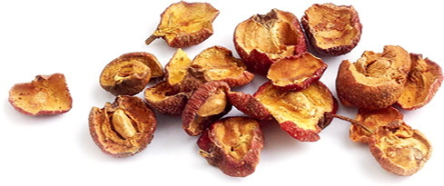
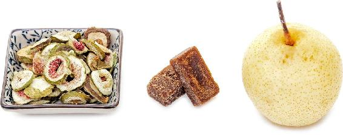
一些学校的老师，还有电视台的主持人，每天大量说话，导致嗓子长期不舒服。其实，这不仅仅是嗓子的问题，关键是因为长期说话太多，伤到了肾气。所以，光是用清热消炎的药来治嗓子，解决不了根本问题。如果想治本的话，既要清咽喉，又要补肾气，双管齐下才可以。平时可以喝蜂蜜南瓜子茶来保养嗓子。
【原料】
生南瓜子500克、蜂蜜适量。
【做法】
【功效】
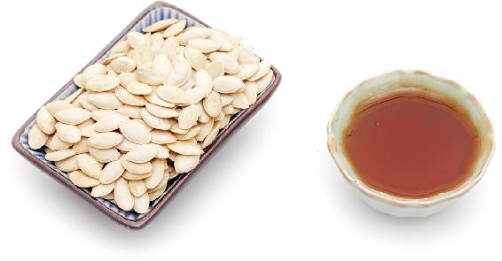
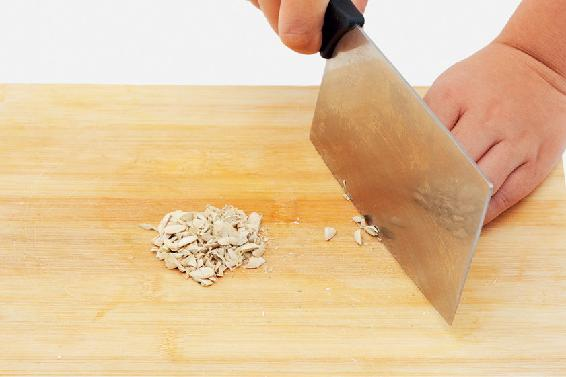
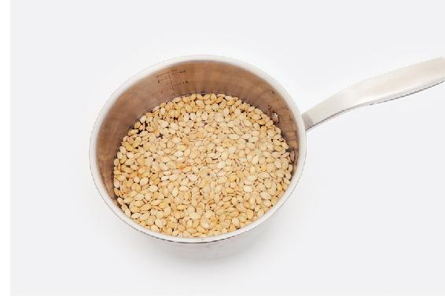
环保小提示
南瓜子完全可以自己收集。家里吃南瓜时，从南瓜瓤里把南瓜子掏出来。这时候南瓜子是很干净的，不要清洗，直接放在阳台上晾干就可以了。
读者评论
——珉
——期待
——心灯
——小桥流水
——有梦就好
【原料】
干山楂300克、陈皮200克、红糖200克。
【做法】
【功效】
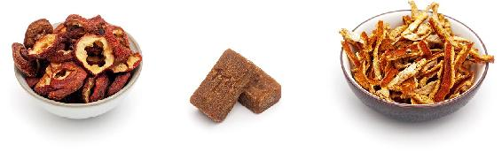
允斌点评
孕妇、胃酸过多的人，胃溃疡、十二指肠溃疡患者不宜吃山楂。
有的人咽喉经常有异物感，不是疼也不是痒，就是觉得有一点不舒服，说话多了费力，喜欢时不时清清嗓子，或者轻咳几声。这种情况可以喝这道茶来调理。
【原料】
干山楂600克、川陈皮120克、蜂蜜20克。
【做法】
【功效】
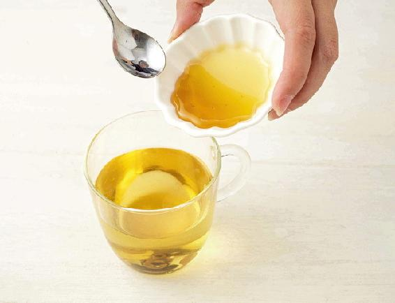
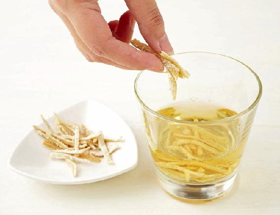
允斌叮嘱
血脂偏高而又痰多的人也可以喝这款茶调理。
——平
——50群读者
——桂
梨皮有消炎止咳的功效，而梨肉则可以降火润喉，搭配在一起，可以调理慢性喉炎。
【原料】
干无花果6个、雪梨1个、红糖2小块。
【做法】
【功效】
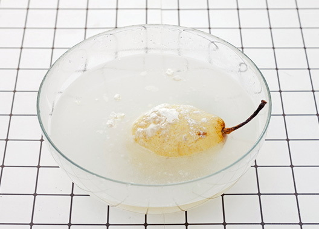
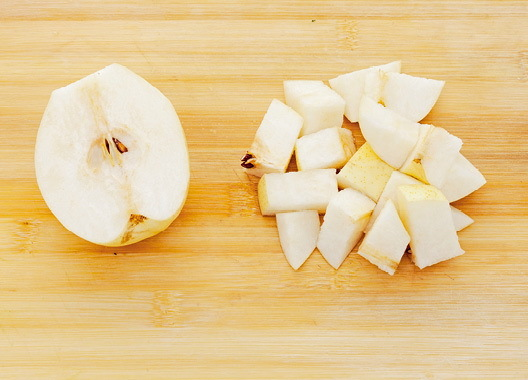
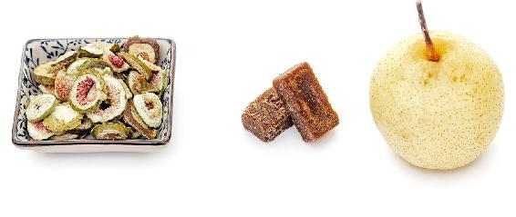
——永结青春
——兠里侑鎕
——心怡
许多人感觉嗓子不舒服时，习惯泡胖大海喝，其实胖大海非常寒凉，还有少量毒性，不适合经常饮用。正确的选择应该是罗汉果。
罗汉果有三大作用：清肺利咽，化痰止咳，润肠通便。它是我们平时调理咽喉问题的好帮手，对于咽喉炎、扁桃体炎、肺热、咳嗽、痰黄等都有很好的效果。
有些职业需要长时间说话，比如教师、主持人，他们往往被慢性咽炎困扰。这种时候治嗓子解决不了根本问题，因为在咽喉部位有肾经通过，话说得太多，就会耗气伤肾。还有的人经常熬夜，也会伤肾，容易得咽喉炎。
这样的情况，罗汉果就可以派上用场。因为它不仅清肺热，还有补肾气的作用，可以使慢性咽炎从病根上得到调理。
有慢性咽喉炎的人，发作后觉得有点痛，经常咳几下，嗓子里总有点黄痰；还有一些人话说得太多，经常熬夜，咽喉部位发红、上火，这两种人都可以经常煮罗汉果水来喝。
【原料】
罗汉果7个。
【做法】
【功效】
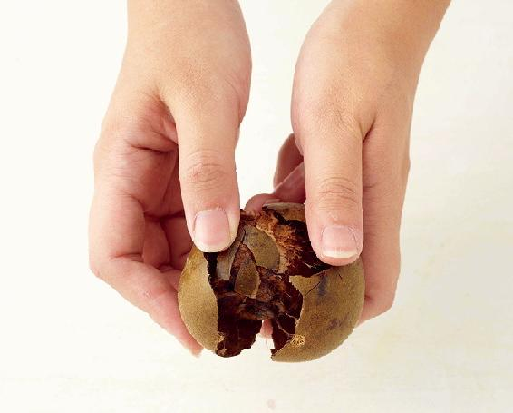
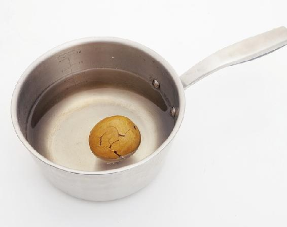
允斌叮嘱
很多人直接拿罗汉果泡茶喝，这样效果不佳。罗汉果一定要煮过，药效才能充分析出。所以，最好把它煮20分钟以上再喝。请记住，要把罗汉果压破，连皮带核一起煮。
读者评论
——阿艳
——格桑
——琳琳
——均旌
——期待
——桥
——25群读者
——41群陈燕
——塞外明珠
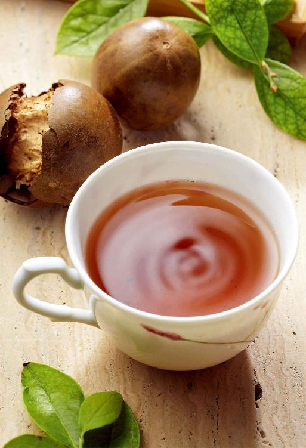
繁缕是花园里最常见的杂草。家里养花的话，它也常常“不请自来”，在花盆里生根发芽。
繁缕水适合虚火型的慢性咽炎，这类型在抽烟的人中比较多。它的症状是咽喉干痛，还有一种烧灼感，而且爱喝水。
【原料】
新鲜繁缕、蜂蜜适量。
【做法】
【功效】
允斌叮嘱
——Betty舍予
——碧水蓝天
——英芸萍莎
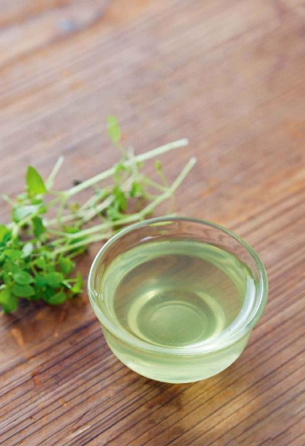
牛蒡是蔬菜，日常保健都可以吃。特别是扁桃体反复发炎、咽喉肿痛的人可以多吃。还可以加上薄荷，对预防咽喉肿痛效果更好。
【原料】
炒好的牛蒡300克（炒牛蒡茶的方法参见本书顺时强身篇95页）、干薄荷叶60克。
【做法】
【功效】
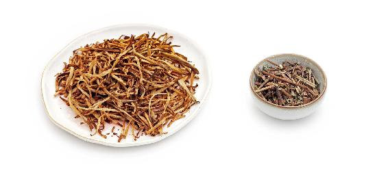
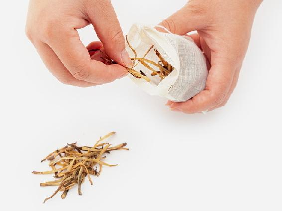
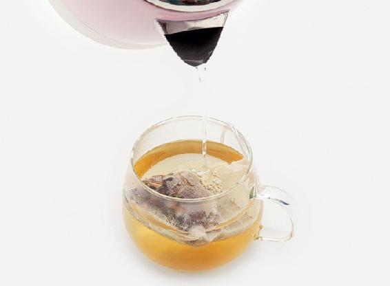
读者评论
——轩儿
——wenzhf
——小蜗牛